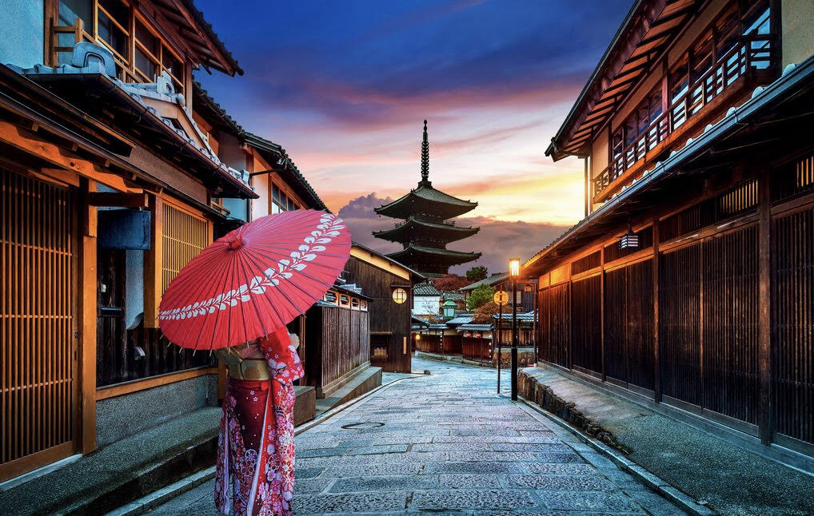
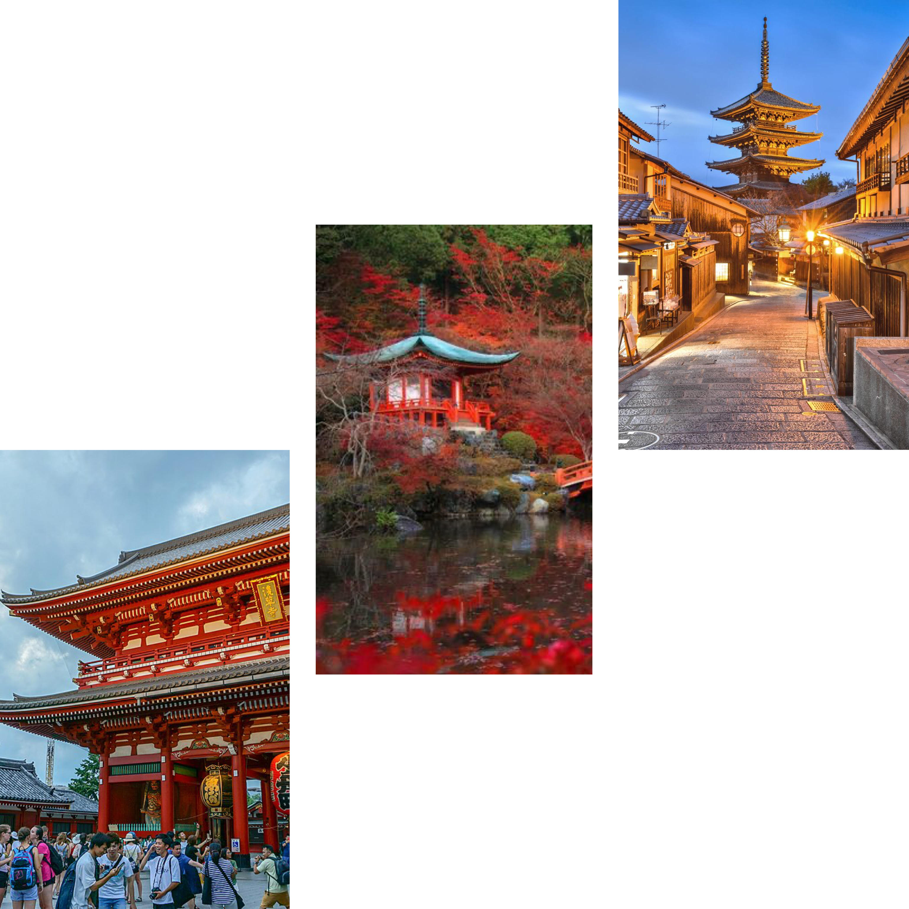
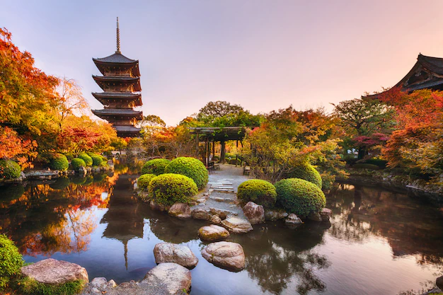

Ancienne capitale impériale du Japon jusqu'à la restauration Meiji, autrefois nommée Heian-kyo, Kyoto est l'une des villes les plus appréciées des voyageurs au Japon.Considérée comme la capitale culturelle du Japon, elle héberge de nombreux sites classés au patrimoine mondial de l'Unesco, pour le bonheur des touristes qui sont chaque année plus nombreux à la découvrir.
Que serait Kyoto sans ses temples ?

Aussi cliché que cela puisse paraître, les temples et sanctuaires de Kyoto font partie des inévitables de votre visite. À vrai dire, ils sont tellement nombreux et si bien implantés au cœur de la ville et tout autour dans les montagnes qu'il s'avère même difficile de faire quelques pas sans en apercevoir un.

Le plus beau parmi eux restent sans doute le TO-JI ! Lorsque vous le verrez, vous comprendrez pourquoi Toji est devenu le symbole de Kyoto. Perché à 55 mètres, c'est le plus haut bâtiment en bois du Japon !
